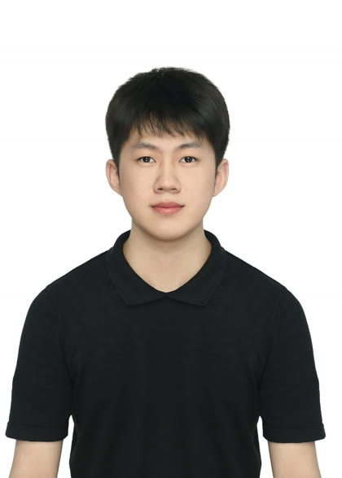

曾嘉杰
- 求职意向
- AI 工程师 / FDE（落地交付）
- 出生年月
- 2005.05
- 毕业院校
- 深圳技术大学
- 学历专业
- 本科 · 物联网工程
- 联系电话
- 13066948172
- 电子邮箱
- 202200201121@stumail.sztu.edu.cn

教育背景Education
深圳技术大学 物联网工程 本科
2022.09 – 2026.06
主修：数据结构、信息安全、微机原理与接口技术、电子技术基础、操作系统
专业技能Skills
- 应用开发
- Vue、ElementUI；用统一接口接入 Gemini、GPT-4、DeepSeek，页面侧切换模型
- 大模型
- Prompt 角色与约束；RAG（题库采集、文本分块、BM25 检索与查询改写）
- 实施交付
- 需求调研、业务蓝图、PLM 配置与测试上线、关键用户培训；BOM / 研发主数据梳理
- 协作
- 需求与方案文档；和老师、业务用户对齐场景后再落系统
项目经历Projects
AI 教学助手 全栈开发
2024.03 – 2024.06
Vue · ElementUI · Gemini / GPT-4 / DeepSeek · Prompt · RAG · BM25
- 和任课老师对齐助教场景：按题目上下文带学生想，而不是直接给答案；据此写需求与方案，再定「多模型 + RAG」。
- Vue + ElementUI 做问答页；后端统一封装 Gemini、GPT-4、DeepSeek，页面可切换模型，避免每个模型各写一套调用。
- Prompt 把模型收成编程课助教：只提示思路和检查步骤，禁止直接输出完整代码。
- 爬取校内 OJ 编程题并切块，用 BM25 做关键词改写与检索后再送给模型，让回答落到具体题目。
实习经历Internship
金蝶软件 PLM 实施顾问
2025.09 – 2026.01
- 跟完一次 PLM 实施闭环：需求调研、方案与业务蓝图、系统配置、测试、上线，并给关键用户做操作培训。
- 梳理产品研发与 BOM 维护路径，把物料和清单收到系统里的一份主数据上，减少跨部门来回改数。
自我评价Summary
- 能把大模型接到真实场景：页面、多模型 API、Prompt 约束和 RAG 检索一起做完，而不是只接一个聊天窗口。
- 在金蝶做过实施：问清业务、写成方案、配到系统、教会用户，适应现场联调和返工。
- 物联网工程出身，求职 AI 应用开发或 FDE，做能写出来也能落地的一侧。